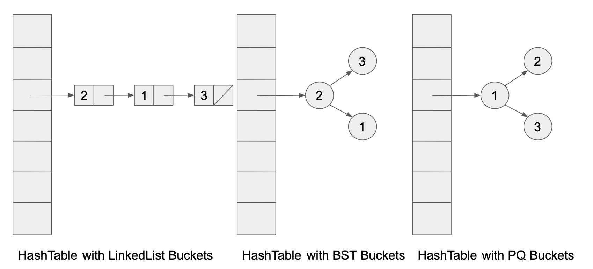

实验 07: 哈希映射¶
常见问题¶
本实验FAQ详见此处。
简介¶
在本实验中，你将实现 MyHashMap 类，这是一个基于哈希表的 Map61B 接口实现。这与实验 06 很相似，只不过这次我们要构建的是 Hashmap 而不是 TreeMap
在完成你的代码实现后，你需要将你的实现与基于链表的映射实现（ULLMap） 以及 Java 内置的 HashMap 类（同样基于哈希表实现）进行性能对比。我们还将比较 MyHashMap 在采用不同数据结构作为哈希桶（buckets）时的性能表现
MyHashMap¶
概述¶
我们在 MyHashMap.java 中创建了一个 MyHashMap 类，它的启动代码非常少。你的目标是实现 MyHashMap 所继承的 Map61B 的接口中的所有方法，除了 remove、keySet 和 iterator（在实验 07 中这些是可选的）。对于这些方法，请直接抛出 UnsupportedOperationException 异常。
请注意，在实现 Map61B 的所有方法之前，你的代码无法编译。你可以一次性给所有需要的方法编写方法签名，但要抛出 UnsupportedOperationException 异常直到你具体地实现它们。
复习动画¶
以下是一个哈希表如何工作的快速动画。 N指的是哈希表中的项目数，M指的是桶的数量。
我们使用对象的 hashCode 对桶的数量取模（%）来确定该对象（以几何图形代表）落入哪个桶。当达到负载因子时，我们将桶的数量乘以扩容因子，然后对所有项目重新哈希，并用新的桶数量对其取模。
对于下面的视频动画，哈希函数是任意的。对于输入的每个几何图形（对象），它都会输出一个随机整数。
感谢 Meshan Khosla 制作了这个动画!
框架代码¶
你可能还记得在课堂上讲过，当我们构建哈希表时，可以选择多种不同的数据结构作为桶。经典的做法是选择链表。但我们也可以选择数组列表、树集，甚至更 crazy 的数据结构，比如优先队列，甚至其他的哈希集！

在本实验中，我们将尝试使用不同的数据结构作为哈希桶，并通过实验验证不同数据结构作为哈希桶时是否存在渐进性差异。
在本实验中，我们将尝试使用 LinkedList、ArrayList、HashSet、Stack 和 ArrayDeque（遗憾的是，由于模板过多，我们没用如上图所示的 TreeSet 或 PriorityQueue，不过如果你愿意，欢迎尝试）。这些类可真不少！
可以想象，如果我们未竟周密设计就实现 MyHashMap，那么当需要更换桶的数据结构类型时，将不得不进行大量的查找替换操作。例如，如果我们想把所有的 ArrayList 桶都改成 LinkedList 桶，我们将不得不查找替换所有出现的 ArrayList，并将其替换为 LinkedList。这种做法并不理想——因为项目中可能存在依赖某些 ArrayList 方法的非桶组件。若将其错误替换为 LinkedList，将破坏代码功能！这不是我们想要的。
初始代码的目的是提供一种更简便的方法来使用 MyHashMap 以尝试不同的桶类型。它通过多态性和继承来实现这一点，我们在本学期早些时候已经学习过。它还使用了工厂方法和类，它们是用于创建对象的实用程序代码。在处理更高级的代码时，这是一种常见的模式，不过具体细节不在 61B 的范围内。
MyHashMap 通过使用哈希表实现了 Map61B· 接口。在提供的初始代码中，我们声明了实例变量 private Collection<Node>[] buckets，它是哈希表的底层数据结构。让我们解析这段代码的含义：
buckets是MyHashMap类中的一个private变量
private Collection<Node>[] buckets;- 它是一个
Collection<Node>对象的数组 (或表)，其中每个Collection都代表哈希表中的一个桶，并且存储Node对象。 Node是我们提供的一个私有（嵌套）辅助类，用于存储单个键值映射。此类的代码应该是容易理解的，不需要做任何修改。
protected class Node {
K key;
V value;
Node(K k, V v) {
key = k;
value = v;
}
}java.util.Collection是一个被大部分数据结构继承的接口，它代表一组对象。该接口支持add、remove、iterator等方法。java.util中的许多数据结构（如ArrayList、LinkedList、TreeSet、HashSet、PriorityQueue等）都实现了Collection接口。请注意，由于这些数据结构实现了Collection，我们可以通过多态将其赋值给Collection类型的变量。- 因此，我们的
Collection<Node>[]数组可通过多种数据结构实例化（例如LinkedList<Node>或ArrayList<Node>）。请确保你的桶设计能泛化到任何Collection类型！ 具体实现方式请参考下方警告。· - 注意在创建新的
Collection<Node>[]数组并存储在buckets变量中时，Java 禁止创建参数化类型的数组。Collection<Node>是参数化类型（因为我们通过 Node类参数化了 Collection类）。因此，Java 不允许new Collection<Node>[size]这种操作（无论 size取值如何）。若尝试此操作，将触发 "Generic array creation"（泛型数组创建）错误。
Warning
为了解决这个问题，你应该创建 new Collection[size]，其中 size 代表所需大小。
Collection[]数组的元素可以是任意类型的集合，例如Collection<Integer>或Collection<Node>。就我们的目的而言，我们仅向该数组添加Collection<Node>类型的元素。
哈希表通过工厂方法 protected Collection<Node> createBucket() 实现不同桶类型的切换，该方法直接返回一个 Collection 。在 MyHashMap.java 中，你可自由选择桶的数据结构。例如，若选择 LinkedList，则 createBucket() 的实现如下：
protected Collection<Node> createBucket() {
return new LinkedList<>();
}Warning
你必须使用 createBucket() 方法创建新桶，而非使用 new 操作符。 初看之下这似乎是没必要的，但它允许工厂类通过重写（override）该方法以为每个桶提供不同的数据结构。
在 MyHashMap 中，该方法可返回 new LinkedList<>() 或 new ArrayList<>()。
实现要求¶
你应该实现以下构造函数：
public MyHashMap();
public MyHashMap(int initialCapacity);
public MyHashMap(int initialCapacity, double loadFactor);以下是 MyHashMap 的一些额外要求：
-
你的哈希映射初始桶数量应等于
initialCapacity。当负载因子超过最大loadFactor阈值时，应扩展MyHashMap的大小。回想一下，当前 负载因子 计算公式为：loadFactor = N/M，其中 N是映射中的元素数量，M是桶的数量。负载因子代表每个桶的平均元素数量。若未指定initialCapacity和loadFactor，应设置默认值initialCapacity = 16和loadFactor = 0.75（与 Java 内置HashMap相同）。 -
你应使用分离链接法处理冲突。除桶类、
Collection、Iterator、Set和HashSet外，不应该使用其他库。关于分离链接法的实现细节，请参阅上文的 框架代码 部分。 -
由于我们使用
Collection<Node>[]作为桶数组，在实现MyHashMap时，你只能使用Collection接口指定的方法。当你在Collection中搜索Node时，需遍历该集合并找到key与目标键.equals()匹配的Node。 -
若同一键被重复插入，每次都应更新其值（即不应添加新
Node）。可假定永远不会插入null键。 -
扩容时，确保是乘法（几何）调整，而不是加法（算术）调整。 不要求 缩容。
-
假设插入任何对象的
hashCode()均匀分布 （回想一下：Java 中每个对象都有其hashCode()方法），MyHashMap的所有操作都应该是恒定均摊时间的。
hashCode() 可能返回负值！Java 的取模运算符 % 在输入为负数时会返回负值，但我们需要将元素放到[0, M)范围内的桶中。有多种处理方式：
-
（推荐）你可以使用
Math.floorMod()替代%进行取模运算。该方法返回值的范围是非负数，类似于 Python 的取模运算。 -
若
%运算结果为负，可加上数组长度使其转化为正数。 -
你可以使用 Math.abs() 函数将负值转为正值。请注意：|x| mod m、|x mod m| 和 x mod m 通常不等价！ 我们在这里使用取模运算只是为了确保有效的索引值，不必关心元素被分配到哪个具体桶，因为优秀的哈希函数应能在正负值范围内均匀分布元素。
-
基于选项3 但是使用位掩码变体（不了解位掩码无需担心）。这个方法超出 61B 课程范围，但因为部分参考资料使用，所以我们在这里列出。 `
Task
根据 Map61B 接口的规范及上述指南完成 MyHashMap 类的实现。
资源¶
以下资源可能会对您有所帮助
以下内容可能包含过时的代码或使用不熟悉的技术，但应该还有用：
ULLMap.java（已提供），一个基于无序链表的Map61B实现
测试¶
你可以使用 TestMyHashMap.java 测试你的实现。部分测试较为棘手，涉及 61B 课程中我们没学过的奇怪的操作。测试的注释有助于你理解测试的实际行为。
如果你正确实现了泛型 Collection 桶，你还应该通过 TestMyHashMapBuckets.java 的测试。TestMyHashMapBuckets.java 会为每个实现不同桶数据结构的映射子类调用 TestMyHashMap.java 中的方法。请确保你使用提供的工厂方法（即 createBucket）正确实现了 MyHashMap，以保证 TestHashMapBuckets.java 测试通过。
如果你选择额外实现 remove、keySet 和 iterator 方法，我们提供了 TestHashMapExtra.java 进行相关测试。
速度测试¶
我们提供了两个交互式速度测试文件：InsertRandomSpeedTest.java 和 InsertInOrderSpeedTest.java。在完成 MyHashMap 实现前，请勿运行这些测试。完成后，可在 IntelliJ 中运行测试。
InsertRandomSpeedTest 类测试 MyHashMap、ULLMap（已提供）和 Java 内置 HashMap的元素插入速度。它的工作流程为：要求用户输入规模 N，然后生成 N 个长度为 10 的字符串，并以 <String, Integer> 键值对形式插入映射。
运行测试，与基础实现与工业级实现相比，观察你的数据结构的性能变化随 N 的增长如何变化，并将结果记录到提供的 src/results.txt 文件中。结果文件无固定格式要求，数据点数量不限，但我们希望你至少写一两句观察的结论。
接着尝试运行 InsertInOrderSpeedTest，其行为类似 InsertRandomSpeedTest，但此次 <String, Integer> 键值对中的 String 按字典序递增插入。你的代码性能应与 Java 内置方案处于同一量级（例如相差 10 倍以内）。这表明：相比最先进的树形映射（TreeMap），最先进的哈希映射（HashMap）的实现相对更加简单。请思考一下 BSTMap/TreeMap 和其他数据结构之间的这种关系，然后思考：是否存在哈希映射更具优势的场景？与同伴讨论并将答案写入 results.txt。
不同的桶类型¶
若你已正确实现泛型 Collection 桶，那么大部分工作已经完成！我们可直接比较用于实现桶的不同数据结构。我们提供了 speed/BucketsSpeedTest.java，这是一个交互式测试程序：要求用户输入整数 L（后续操作所用字符串的长度）,接着在循环中要求用户输入整数 N，然后使用不同类型的桶运行 MyHashMap 速度测试
请运行测试，比较不同实现在 N 增长时的性能变化。与同伴讨论结果，并将结论记录到 results.txt。
你可能会注意到，使用 HashSet 作为桶的实现会通过遍历整个数据结构来搜索 Node 。但我们知道，哈希表本应支持更高效的查找。如果我们能在 HashSet 上使用常数时间搜索，我们的哈希表是否会获得渐进复杂度层面的加速？ 你无需实现新功能，只需与同伴讨论并将想法记录到 results.txt。
Task
在 speed 目录下运行上述速度测试，并将你的结果记录在 results.txt 中
可选练习¶
这些练习不计分，但你仍然可以通过给定的测试获得反馈。
在你的 MyHashMap 类中实现方法 remove(K key) 和 remove(K key, V value)。作为额外的挑战，尝试在不使用额外实例变量来存储键集合的情况下实现 keySet() 和 iterator() 方法。
对于 remove，如果参数键在 MyHashMap 中不存在，你应该返回 null。否则，删除键值对 (key, value) 并返回关联的值。